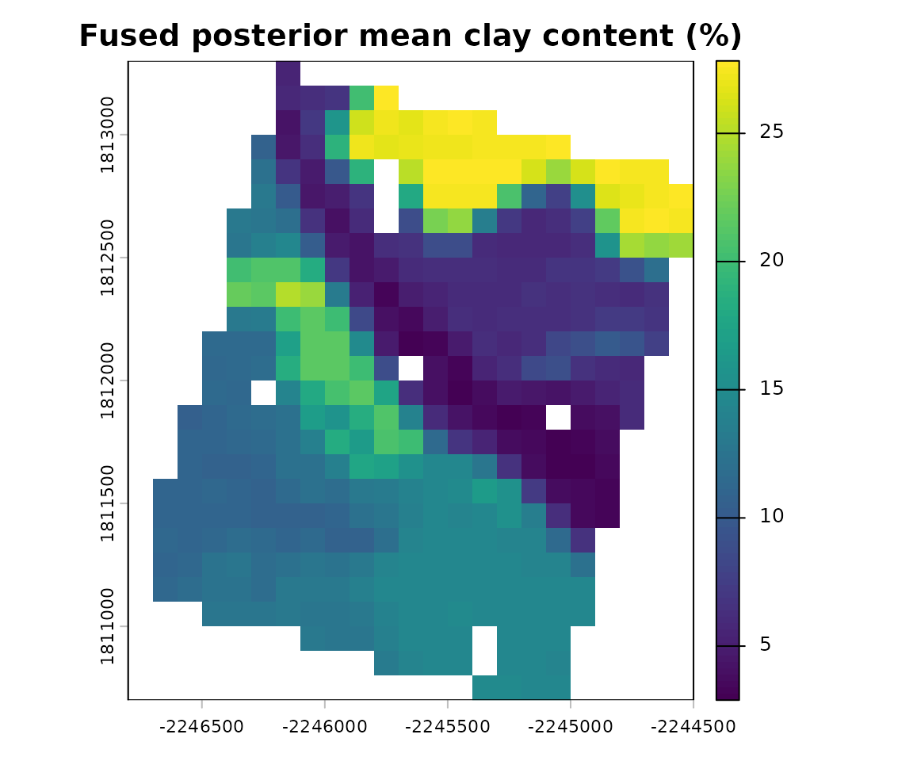
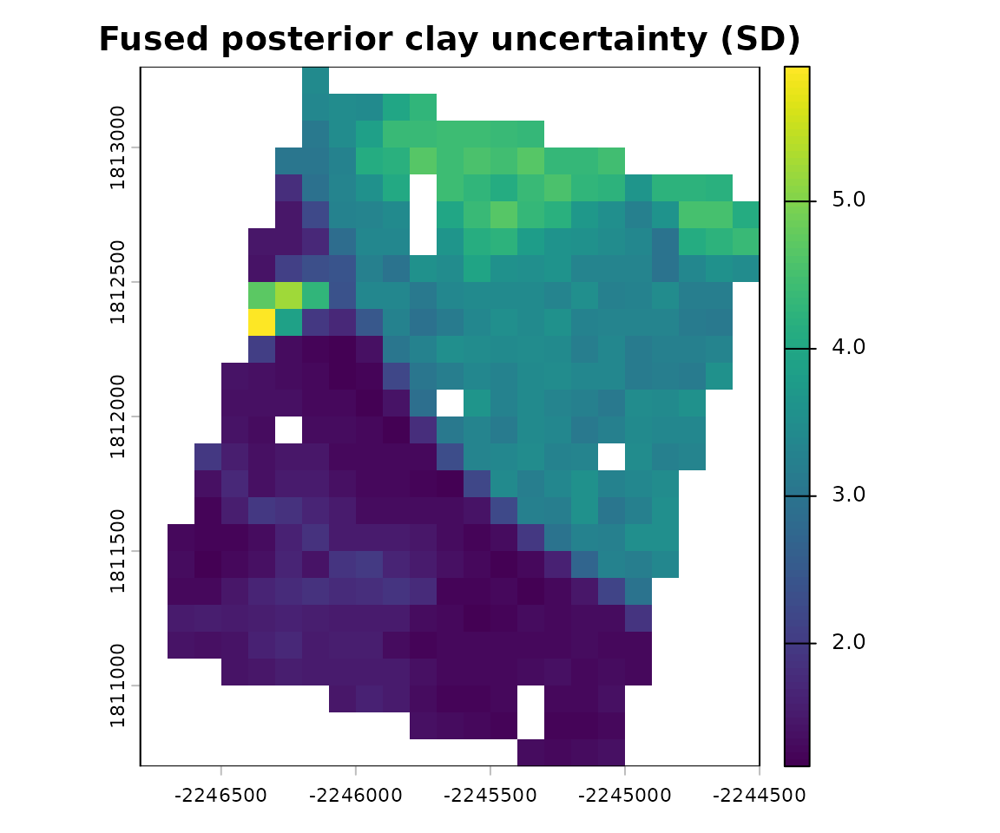
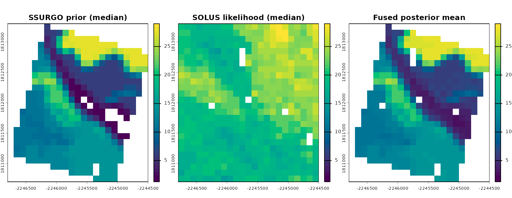
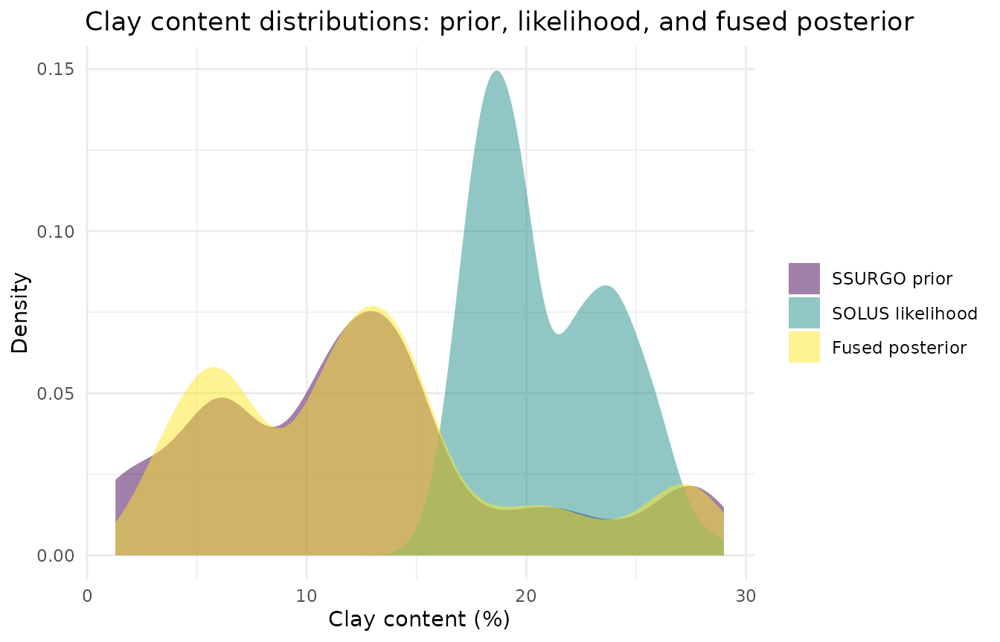
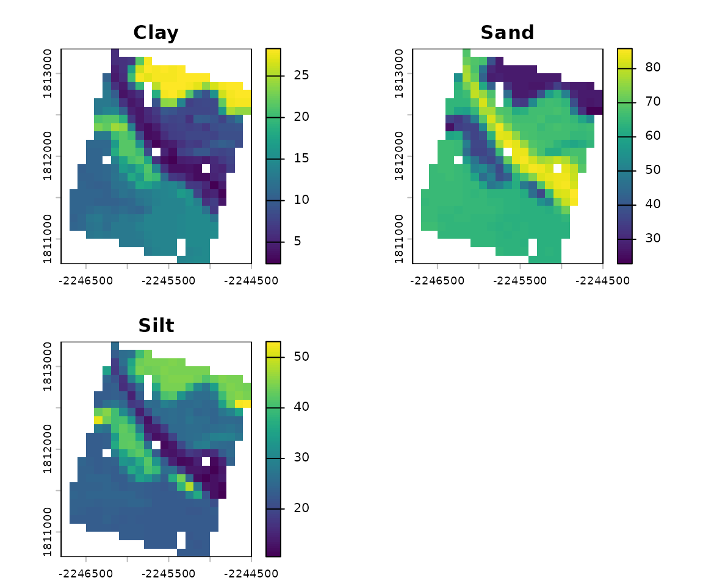

Multi-Source Raster Fusion: SSURGO x SOLUS100
Source:vignettes/raster-fusion-ssurgo-solus.Rmd
raster-fusion-ssurgo-solus.RmdOverview
This vignette is the clearest example of soilSIM’s core architecture:
a generic, data-source-agnostic raster fusion core
(fuse_property_adaptive(), built on the same
Bayesian-updating primitives as the scalar
bayesian-updating.R toolkit) combined with two concrete
data-source adapters - SSURGO (supplying the prior) and
SOLUS100 (supplying the likelihood) - over a shared, real area of
interest (AOI). The architecture is designed so future data sources
(e.g. HWSD, SoilGrids) could plug in as new adapters supplying either
side, without changing the fusion core. See
soilSIM/docs/09_multi_source_raster_fusion_pipeline.md for
the full function-level reference.
The real AOI
A ~2 km x 2 km area of interest in the Salinas Valley, California - chosen because it has confirmed real SOLUS100 coverage:
Step 1: Fuse a single property (clay content)
run_stage1_fusion() is the top-level orchestrator: it
fetches (and disk-caches) SSURGO percentile rasters as the prior,
SOLUS100 percentile rasters as the likelihood, resamples the SSURGO
prior onto SOLUS100’s coarser grid, and fuses them via
fuse_property_adaptive(), which adaptively routes to a
closed-form or general grid-KDE fusion depending on the property’s
distributional shape:
# The real call this vignette's cached data came from:
property_config <- list(id = "clay", solus_variable = "claytotal", dist = "normal")
fusion_clay <- run_stage1_fusion(aoi, property_config, top_depth = 0, bottom_depth = 5)
fusion_clay <- unwrap_nested_rasters(
readRDS(system.file("extdata", "fusion_clay_salinas.rds", package = "soilSIM"))
)
fusion_clay$dist
#> [1] "normal"
fusion_clay$route
#> [1] "bayesian_update_general"
names(fusion_clay$posterior)
#> [1] "mu" "sigma"The fused posterior for a dist = "normal" property
routed through bayesian_update_general is a pair of rasters -
mu (posterior mean) and sigma (posterior
standard deviation) - one value per grid cell, at SOLUS100’s native 100
m resolution:
fusion_clay$posterior$mu
#> class : SpatRaster
#> size : 26, 23, 1 (nrow, ncol, nlyr)
#> resolution : 100, 100 (x, y)
#> extent : -2246800, -2244500, 1810700, 1813300 (xmin, xmax, ymin, ymax)
#> coord. ref. : NAD83 / Conus Albers (EPSG:5070)
#> source(s) : memory
#> name : lyr.1
#> min value : 2.893044
#> max value : 27.828436
terra::plot(fusion_clay$posterior$mu, main = "Fused posterior mean clay content (%)")
terra::plot(fusion_clay$posterior$sigma, main = "Fused posterior clay uncertainty (SD)")
Comparing the prior, likelihood, and fused posterior
The plots above show only the fusion output. To see what
fusion actually did, we need to look at its two inputs side by
side with the result. fusion_clay$prior$values and
fusion_clay$likelihood$values are each a list of percentile
rasters (SSURGO’s and SOLUS100’s, respectively) rather than a single
raster - we use each source’s median (P50) as its
representative value:
names(fusion_clay$prior$values) # SSURGO percentiles
#> [1] "P05" "P25" "P50" "P75" "P95"
names(fusion_clay$likelihood$values) # SOLUS100 percentiles
#> [1] "P025" "P50" "P975"
prior_r <- fusion_clay$prior$values[["P50"]]
likelihood_r <- fusion_clay$likelihood$values[["P50"]]
posterior_r <- fusion_clay$posterior$murun_stage1_fusion() already resampled the SSURGO prior
onto SOLUS100’s grid before fusing, so all three rasters share the same
extent/resolution and combine directly with c() - no
separate par(mfrow = ...) panels needed. We use one shared
color scale (range) across all three panels so that color
differences reflect real differences in clay content, not each panel’s
own auto-rescaling:
shared_range <- range(
terra::minmax(prior_r), terra::minmax(likelihood_r), terra::minmax(posterior_r)
)
compare_stack <- c(prior_r, likelihood_r, posterior_r)
names(compare_stack) <- c("SSURGO prior", "SOLUS likelihood", "Fused posterior")
terra::plot(
compare_stack,
main = c("SSURGO prior (median)", "SOLUS likelihood (median)", "Fused posterior mean"),
col = grDevices::hcl.colors(50, "viridis"),
range = shared_range,
nc = 3
)
The SSURGO prior is sparse and blocky (map-unit polygons rasterized
onto the grid, with NA where no delineation lines up with a
cell) while the SOLUS100 likelihood is a smooth, fully-populated 100 m
grid - the fused posterior inherits the prior’s spatial support (cells
stay NA unless both inputs contribute) but its clay values
are pulled toward the SOLUS100 pattern.
The same three rasters, viewed as distributions rather than maps, show what the Bayesian update did numerically:
prior_vals <- terra::values(prior_r, na.rm = TRUE)
likelihood_vals <- terra::values(likelihood_r, na.rm = TRUE)
posterior_vals <- terra::values(posterior_r, na.rm = TRUE)
clay_dist_df <- data.frame(
value = c(prior_vals, likelihood_vals, posterior_vals),
source = factor(
c(rep("SSURGO prior", length(prior_vals)),
rep("SOLUS likelihood", length(likelihood_vals)),
rep("Fused posterior", length(posterior_vals))),
levels = c("SSURGO prior", "SOLUS likelihood", "Fused posterior")
)
)
ggplot(clay_dist_df, aes(x = value, fill = source)) +
geom_density(alpha = 0.5, color = NA) +
scale_fill_viridis_d(name = NULL) +
labs(
title = "Clay content distributions: prior, likelihood, and fused posterior",
x = "Clay content (%)",
y = "Density"
) +
theme_minimal()
In this AOI, the SSURGO prior’s mass sits mostly at low clay values with a long thin tail, while the SOLUS100 likelihood is centered much higher (~15-25%). The fused posterior is a sharp, narrow peak near the prior’s low end - the closed-form normal-normal update (bayesian_update_general) combines both sources weighted by their relative (un)certainty, and here it lands close to the prior rather than the likelihood, illustrating that “fusion” is a precision-weighted compromise, not a simple average of the two inputs.
Step 2: Fuse a compositional group (clay, sand, silt jointly)
Fusing clay/sand/silt independently can break the sum-to-100
constraint texture fractions must satisfy.
run_stage1_fusion_group() fuses a whole compositional group
jointly, in isometric log-ratio (ILR) space, guaranteeing every cell’s
fused clay + sand + silt sums to 100:
# The real call this vignette's cached data came from:
composition_groups <- list(texture = list(members = c("clay", "sand", "silt")))
property_configs <- list(
clay = list(id = "clay", solus_variable = "claytotal", composition_group = "texture"),
sand = list(id = "sand", solus_variable = "sandtotal", composition_group = "texture"),
silt = list(id = "silt", solus_variable = "silttotal", composition_group = "texture")
)
fusion_texture <- run_stage1_fusion_group(
aoi, "texture", composition_groups, property_configs, top_depth = 0, bottom_depth = 5
)
fusion_texture <- unwrap_nested_rasters(
readRDS(system.file("extdata", "fusion_texture_salinas.rds", package = "soilSIM"))
)
names(fusion_texture)
#> [1] "clay" "sand" "silt"
fusion_texture$clay$dist # "texture_ilr" for every member - not the per-property normal/beta/gamma dist
#> [1] "texture_ilr"
means <- sapply(fusion_texture, function(m) terra::global(m$posterior$value, "mean", na.rm = TRUE)[1, 1])
means
#> clay sand silt
#> 12.96215 59.93548 27.10238
sum(means)
#> [1] 100Mean fused clay/sand/silt percentages sum to 100 across the AOI - the joint ILR fusion’s guarantee, verified here on real fused output rather than just asserted.
terra::plot(c(fusion_texture$clay$posterior$value,
fusion_texture$sand$posterior$value,
fusion_texture$silt$posterior$value),
main = c("Clay", "Sand", "Silt"))
Under the hood: scalar Bayesian updating
Both fusion routes above ultimately reduce to elementwise arithmetic
on bayesian-updating.R’s scalar fusion functions
(bayes_update_normal_normal(),
fuse_beta()/fuse_gamma(),
bayesian_update()’s general grid-KDE fusion) - they already
work unchanged on SpatRaster inputs via
terra’s operator overloading, so the raster-native code in
raster-fusion.R reuses them directly rather than
reimplementing the same math per-cell. See
soilSIM/docs/08_bayesian_updating.md for these building
blocks used directly on scalar prior/likelihood pairs, independent of
any raster or AOI.
Where this data came from
The cached data this vignette loads
(inst/extdata/fusion_clay_salinas.rds,
inst/extdata/fusion_texture_salinas.rds) was produced once
by data-raw/build_vignette_data.R, which calls
run_stage1_fusion()/run_stage1_fusion_group()
live against NRCS Soil Data Access (SSURGO) and
soilDB::fetchSOLUS() (SOLUS100) for the AOI above. Re-run
that script to refresh it. Producing this vignette’s data surfaced and
fixed a real caching bug in run_stage1_fusion_group() (it
wasn’t wrapping/unwrapping SpatRasters around its disk
cache, silently corrupting the cached texture-group result on a second
read) - fixed in R/raster-fusion.R.